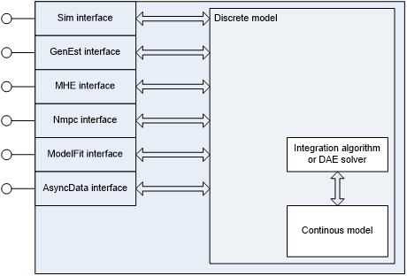
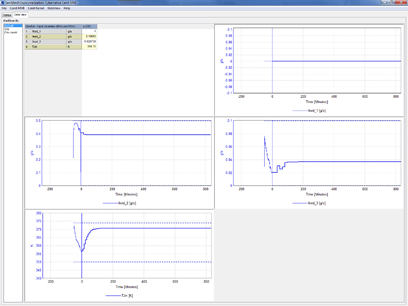

Name
Cybernetica CENIT
Defined in Task
5.4 Hybrid Digital Twins
Short description
Cybernetica CENIT is a tool for online estimation and nonlinear model predictive control. It can be used as both a soft sensing application and a control application.
Model Predictive control is an advanced control method where a mathematical model of the process is used to predict future behavior. The predictions from the model are used in a mathematical optimization algorithm that calculates the optimal process inputs in order to achieve optimal future behavior of selected variables in the process. Constraints and setpoints may be imposed both on the manipulated process inputs variables and the controlled process output variables. Model predictive control also has the advantage that couplings between variables in the process are taken into account.
Example of usage
Main components of Cybernetica CENIT:

Cybernetica CENIT consists of a generic part and an application-specific part, namely the process model. A Cybernetica CENIT application is defined as Cybernetica CENIT and some process model together.
The following are the main components of a Cybernetica CENIT application:
- CenitKernel: This is the main component of Cybernetica CENIT. It implements communication with the process control system and the calculation algorithms (estimator and nonlinear model predictive controller).
- CenitMMI: This is an engineering interface used to configure and supervise CenitKernel, mainly during the engineering phase of the project. The operators interface is normally integrated in the existing DCS interface.
- Process model: This is the application-specific part of a Cybernetica CENIT application. It implements a mathematical representation of the process that is controlled.
- Database: An optional database for logging parameters and calculated data from CenitKernel. The data is used both by CenitMMI and for offline data analysis, and can be used to trend inputs, states and other calculated values.
- Control system: This is the process control system (DCS/ PLC), which handles the low-level communication with the process. This system is not a part of Cybernetica CENIT and should implement an OPC server on a standard form to handle the communication with CenitKernel. Both OPC Classic and OPC UA interfaces are supported by Cenit. The communication includes process measurements, manipulated variables and possibly other variables as well.
The model component is implemented as a Microsoft Windows dynamic link library (DLL). One or more model interfaces can be implemented in such a DLL, depending on which calculation modules shall be used. It is not necessary to implement unused interfaces.
The interfaces do not depend on each other, and it is possible to implement different models for each interface, i.e., a complex model for the simulator interface and a simpler model for the controller. However, it is quite common to implement the same model for all the interfaces. The figure below shows how to do this. In this figure, there is a common inner model code base for all the interfaces:

The available interfaces are:
- Sim interface: Used to simulate the process.
- GenEst interface: Used by the Kalman Filter.
- MHE interface: Used by the Moving Horizon Estimator.
- Nmpc interface: Used by the non-linear predictive controller
- ModelFit interface: Used by Cybernetica ModelFit.
- AsyncData interface: Used by Cybernetica Cenit to handle input data that requires special handling; e.g. registration of process event data.
Interfaces
Data can be presented to the user by using Cybernetica CenitMMI, or extracted from the database using the included tool getdbdata.
Example of CenitMMI displaying some historical trend and prediction plots for some manipulated variables:

Subordinates and platform dependencies
May use PostgreSQL database.
License
Cybernetica Cenit licenses are provided free of charge for the duration of the CogniTwin-project for project partners who need such license to execute their work in the project. Should the project result be taken into permanent use after the end of the project, licenses are provided on fair and reasonable terms as stated in the Grant Agreement.
TRL
9 - Commercial product.
References
http://cybernetica.no/technology/model-predictive-control/
To be considered in particular for the following COGNITWIN pilots
Hydro, Elkem.